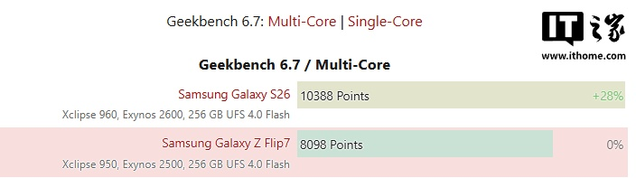
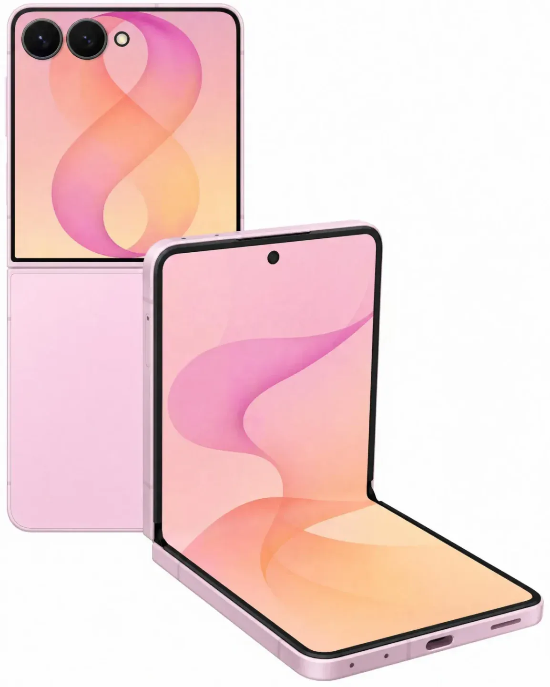
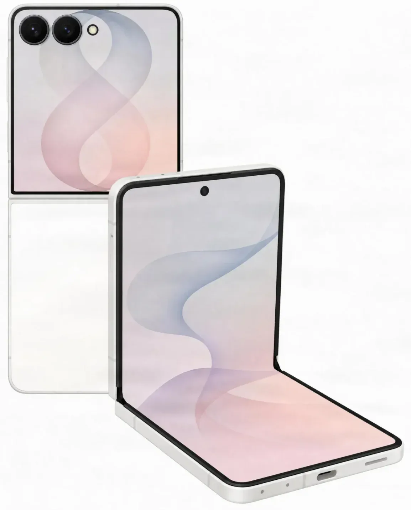
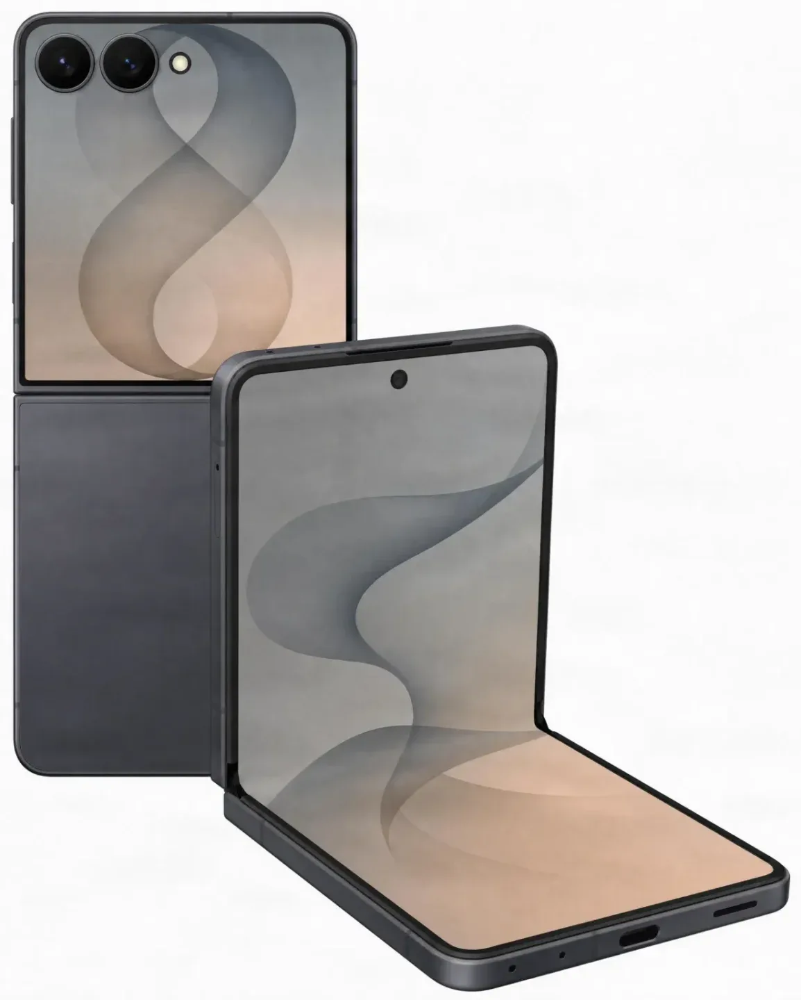

IT홈의 보도에 따르면, 독일 기술 매체 WinFuture가 Galaxy Z Fold8 및 Galaxy Z Fold8 Ultra 모델에 이어 Samsung Galaxy Z Flip8 폴더블 디스플레이 스마트폰의 사양을 공개했습니다.
디자인
Samsung Galaxy Z Flip8은 외관상 큰 변화가 없으며, 주요 변경 사항은 기기 무게입니다. 제품 무게는 180g으로, Galaxy Z Flip7(188g)에 비해 8g 가벼워질 전망입니다.
성능
Samsung Galaxy Z Flip8은 Exynos 2600 칩을 탑재할 예정입니다. NotebookCheck의 테스트 결과에 따르면, Galaxy Z Flip7에 탑재된 Exynos 2500과 비교했을 때 Exynos 2600의 CPU 멀티코어 성능(Samsung Galaxy S26 테스트 기반)은 약 28% 향상될 것으로 예상됩니다.
메모리 구성의 경우, Samsung Galaxy Z Flip8은 12GB RAM을 탑재하며, 저장 용량은 다음 두 가지 사양을 제공할 예정입니다.
- 256GB
- 512GB
디스플레이 및 카메라
내부 화면은 6.9인치 Dynamic AMOLED 2X 120Hz 디스플레이를, 외부 화면은 4.1인치 Super AMOLED를 탑재합니다.
카메라 사양은 다음과 같습니다.
- 메인 카메라: 5,000만 화소
- 초광각 카메라: 1,200만 화소
- 전면 카메라: 1,000만 화소
색상 및 가격
Samsung Galaxy Z Flip8은 그래파이트, 크림, 핑크 세 가지 색상으로 출시될 예정입니다.
가격 정보는 다음과 같습니다.
- 256GB 모델: 1,299유로
- 512GB 모델: 1,499유로
총평
Samsung Galaxy Z Flip8은 전작 대비 가벼워진 무게와 Exynos 2600 칩셋 탑재를 통해 성능 향상을 목표로 하고 있습니다. 내/외부 디스플레이 사양과 다양한 색상 옵션을 제공하며, 용량에 따라 차등화된 가격으로 출시될 예정입니다.
外观与重量
Samsung Galaxy Z Flip8 在外观设计上变化不大，但在轻量化方面有所改进。
- 机身重量：180 克（较前代 Galaxy Z Flip7 减少了 8 克）
核心性能与存储
新机将搭载更高性能的处理器，并提供充足的内存配置。
- 芯片：Exynos 2600（预估多核性能较前代 Exynos 2500 提升约 28%）
- 内存：12GB
- 存储容量：提供 256GB 和 512GB 两种规格
屏幕与影像系统
该机延续双屏设计，并配备高像素的相机模组。
- 内屏：6.9 英寸 Dynamic AMOLED 2X 120Hz 显示屏
- 外屏：4.1 英寸 Super AMOLED
- 主摄：5000 万像素
- 超广角镜头：1200 万像素
- 前置摄像头：1000 万像素
配色与售价
Samsung Galaxy Z Flip8 将提供多种颜色选择，并对应不同的存储容量定价。
- 可选颜色：石墨色、奶油色、粉色
- 256GB 版本价格：1299 欧元
- 512GB 版本价格：1499 欧元
总结
Samsung Galaxy Z Flip8 将搭载 Exynos 2600 芯片并实现轻量化设计。该机配备双屏系统与高像素影像配置，提供多种配色及相应的存储容量选择。
ITホームの報道によると、ドイツの技術メディアWinFutureがGalaxy Z Fold8およびGalaxy Z Fold8 Ultraに続き、Samsung Galaxy Z Flip8のスペックを公開しました。
デザイン
Samsung Galaxy Z Flip8の外観に大きな変更はありませんが、主な変更点はデバイスの重量です。製品重量は180gとなり、Galaxy Z Flip7（188g）と比較して8g軽量化される見込みです。
性能
Samsung Galaxy Z Flip8にはExynos 2600チップが搭載される予定です。NotebookCheckのテスト結果によると、Galaxy Z Flip7に搭載されたExynos 2500と比較して、Exynos 2600のCPUマルチコア性能（Samsung Galaxy S26のテストに基づく）は約28%向上すると予想されています。
メモリ構成については、Samsung Galaxy Z Flip8は12GB RAMを搭載し、ストレージ容量は以下の2種類が用意される予定です。
- 256GB
- 512GB
ディスプレイとカメラ
内側ディスプレイには6.9インチのDynamic AMOLED 2X 120Hzを採用し、外側には4.1インチのSuper AMOLEDを搭載します。
カメラ仕様は以下の通りです。
- メインカメラ：5,000万画素
- 超広角カメラ：1,200万画素
- フロントカメラ：1,000万画素
カラーと価格
Samsung Galaxy Z Flip8は、グラファイト、クリーム、ピンクの3色で展開される予定です。
価格情報は以下の通りです。
- 256GBモデル：1,299ユーロ
- 512GBモデル：1,499ユーロ
まとめ
Samsung Galaxy Z Flip8は、前モデルよりも軽量なボディとExynos 2600チップの搭載により、パフォーマンスの向上を実現しています。内外のディスプレイ仕様や多彩なカラーバリエーションを備え、ストレージ容量に応じた価格設定で展開される見込みです。
According to a report by IT Home, the German tech outlet WinFuture has revealed specifications for the Samsung Galaxy Z Flip8 foldable smartphone, following previous reports on the Galaxy Z Fold8 and Galaxy Z Fold8 Ultra models.
Design
The Samsung Galaxy Z Flip8 will not feature significant changes in its outward appearance; the primary modification is the device's weight. The product is expected to weigh 180g, making it 8g lighter than the Galaxy Z Flip7 (188g).
Performance
The Samsung Galaxy Z Flip8 is expected to be equipped with the Exynos 2600 chip. According to test results from NotebookCheck, the Exynos 2600 is projected to offer approximately a 28% improvement in CPU multi-core performance compared to the Exynos 2500 used in the Galaxy Z Flip7 (based on Samsung Galaxy S26 testing).
Regarding memory configuration, the Samsung Galaxy Z Flip8 will feature 12GB of RAM and offer the following storage options:
- 256GB
- 512GB
Display and Camera
The internal screen features a 6.9-inch Dynamic AMOLED 2X 120Hz display, while the external screen is equipped with a 4.1-inch Super AMOLED panel.
The camera specifications are as follows:
- Main camera: 50MP
- Ultra-wide camera: 12MP
- Front camera: 10MP
Color and Pricing
The Samsung Galaxy Z Flip8 is expected to be released in three colors: Graphite, Cream, and Pink.
Pricing information is as follows:
- 256GB model: €1,299
- 512GB model: €1,499
Summary
The Samsung Galaxy Z Flip8 aims to improve performance through the integration of the Exynos 2600 chipset and a lighter overall weight compared to its predecessor. It will offer standard display specifications across three color options with tiered pricing based on storage capacity.



